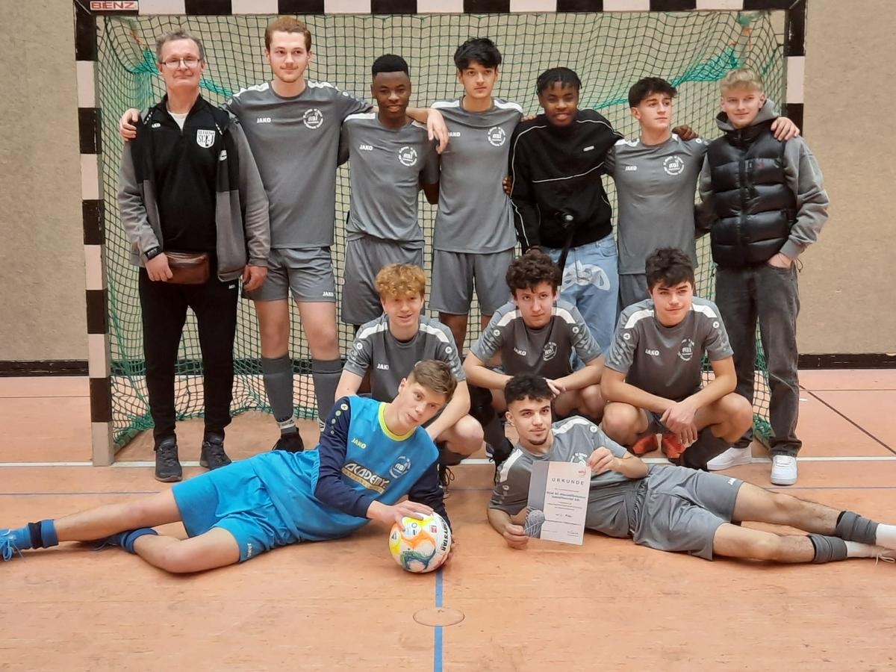

A-Junioren: 2. Platz bei Hallenbezirksmeisterschaft
Nachdem wir uns am 14.01. zu Hause in Abstatt für die Endrunde qualifizierten, nahmen wir am 27.01. an der Endrunde der Hallenbezirksmeisterschaften teil. Als Teil von Gruppe B waren unsere Gegner die SGM TSV Hardthausen KoBra II, der FC Union Heilbronn I, die SGM Neuenstadt Kochertal I und der SV Schluchtern II. Mit drei Siegen und nur einem Unentschieden waren wir also im Finale, Gegner hier war der SV Schluchtern I, die in Gruppe A all ihre Spiele gewinnen konnten. Das Finale nahm für uns einen ganz bitteren Verlauf und erinnert an unser kleines Finale des vergangenen Jahres... Denn auch dieses Jahr verloren wir mit einem Gegentreffer in der letzten Sekunde. Mit einem 0:1 sind wir auf Platz 2 und gratulieren dem SV Schluchtern zum 1. Platz. Wir, Aki und Orçun, sind Stolz auf euch Jungs !!!
Es spielten: Jannis, Jonas, Eyüp, Fabi, Andrew, Finn, Philipp, Yannick und Romeo. Ein Dank gilt an dieser Stelle an Aki, der das Coaching der Mannschaft an diesem Tag alleine bewerkstelligt hat ! Ein weiterer Dank gilt Allen, die mit uns mit fieberten und uns unterstützt haben !!! Am 04.02. haben wir unser erstes Testspiel in Beilstein um 15:00 Uhr gegen die Aktive vom TSV Untergruppenbach, hierzu seid ihr alle eingeladen.
